Ефективний облік, звірка інвентаризації, миттєві звіти та повна автономність.
WoodLog перетворює
ваш
смартфон на потужний
інструмент лісового аудиту.
Сформуйте в ЕОД звіт по залишках, відкрийте його в додатку, відскануйте штрих-код бирки та внесіть обʼєм для звірки.
Перейдіть до екрану "Підсумки" для миттєвої перевірки прогресу та результатів поточної інвентаризації.
Друкуйте на мобільному принтері дані прямо в полі. Відправляйте звіти через месенджери та e-mail у форматі Excel.
Працюйте в команді: різні пристрої збирають дані на одному складі, а по завершенню обмінюються ними між собою.
Вся база даних зберігається локально. Ваші дані завжди під рукою, навіть у найвіддаленіших лісах.
Почніть роботу швидко: імпортуйте існуючий файл номенклатури з Excel або створюйте базу з нуля. Екран "Підсумки" миттєво покаже загальний прогрес інвентаризації.
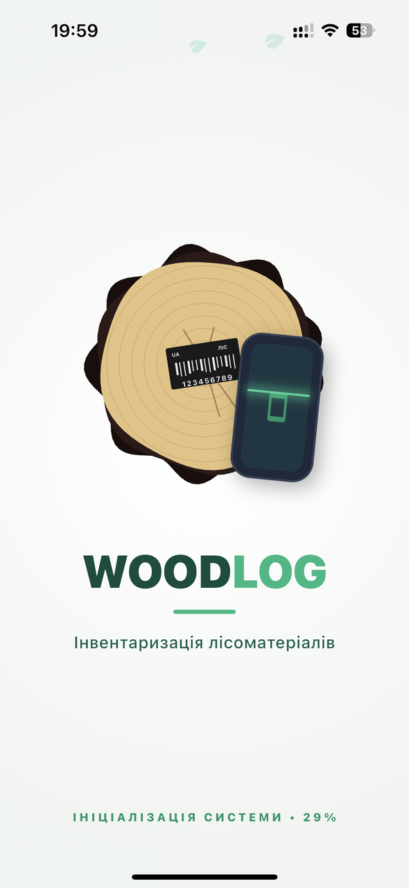
Анімована заставка додатку
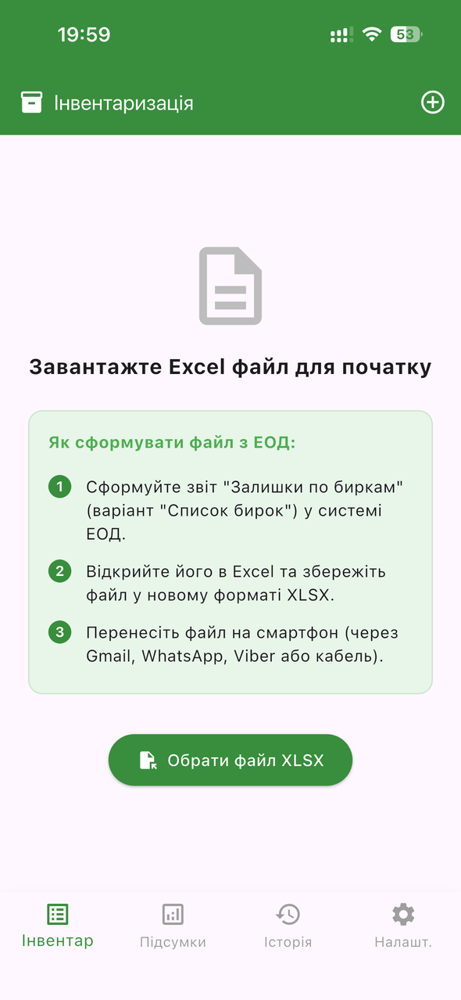
Імпорт файлу з бирками (.xlsx)
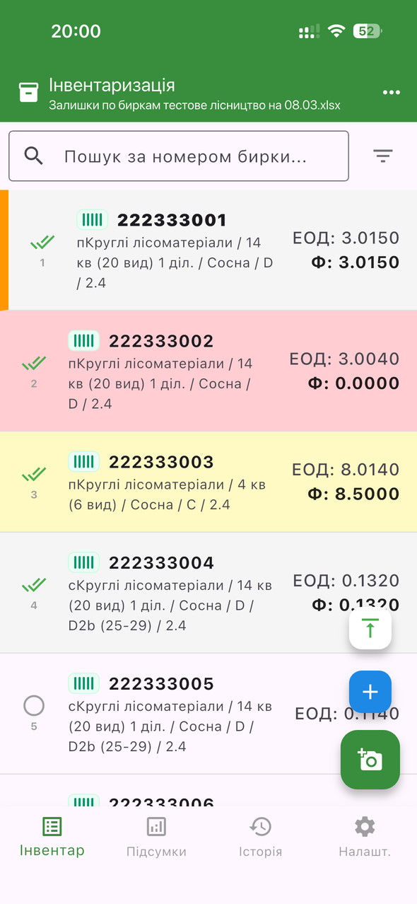
Дашборд поточної інвентаризації
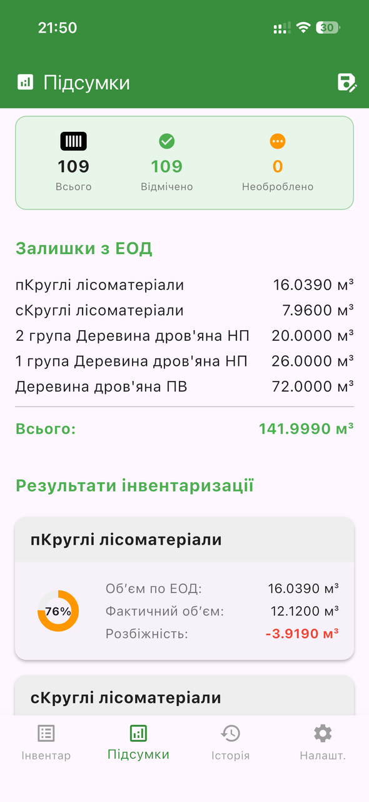
Прогрес активної інвентаризацію
Кожне сканування штрих-коду або ручне введення дозволяє точно зафіксувати дані. Додаток автоматично рахує розбіжності між фактичним і обліковим об'ємом (нестачі, лишки, 100% збіг).
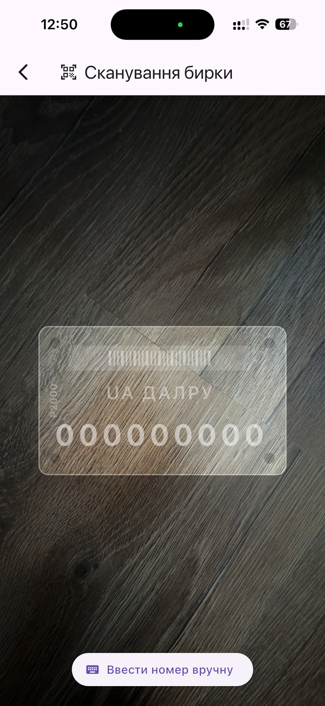
Скануємо штрих-код бирки для перевірки її у списку інвентаризації
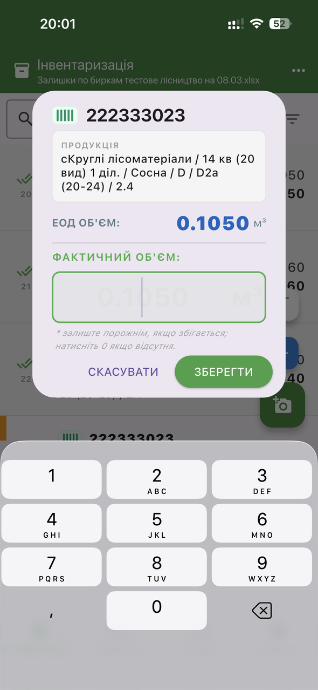
Введення фактичного об'єму. Якщо об'єм збігається - залиште поле порожнім
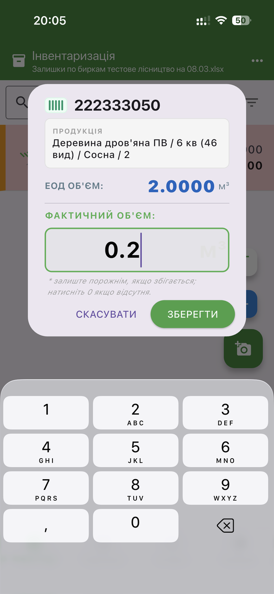
Фіксація нестачі
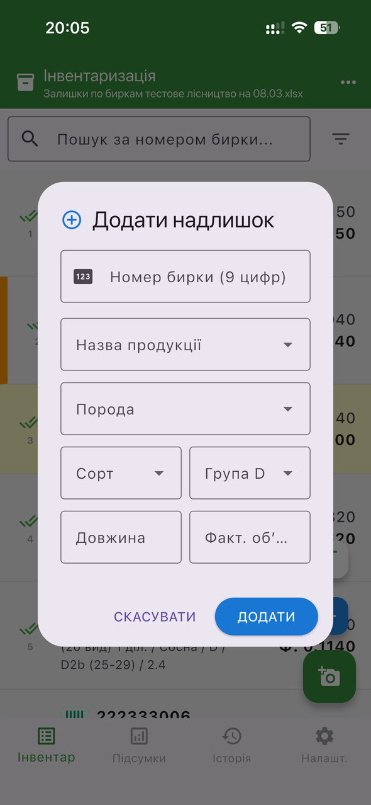
Фіксація фактично відсутньої продукції на складі чи ділянці
Гнучке контекстне меню дозволяє швидко відфільтрувати бирки які вже оброблені, а також знайти бирку за номером.
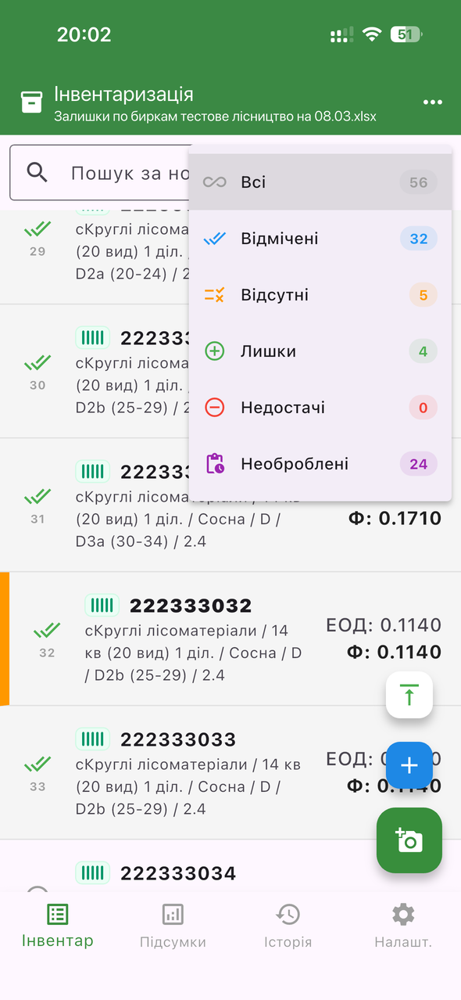
Зручний фільтр за параметрами: всі бирки
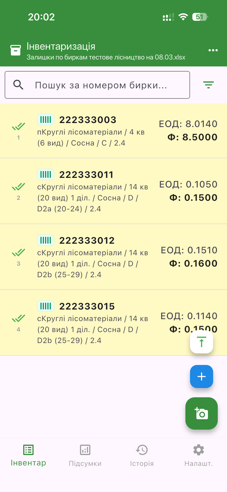
Зручний фільтр за параметрами: лишки
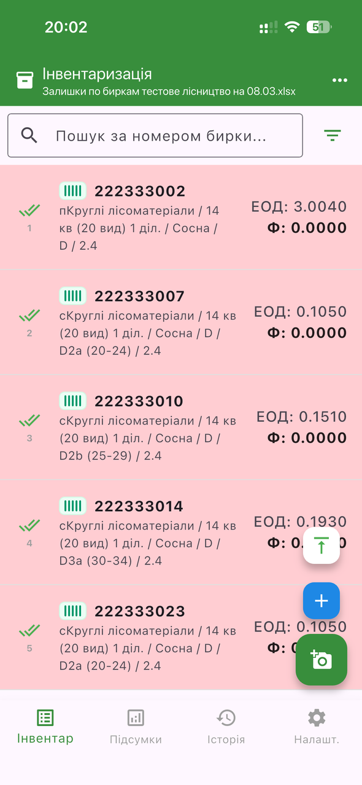
Зручний фільтр за параметрами: відсутні(нестачі)
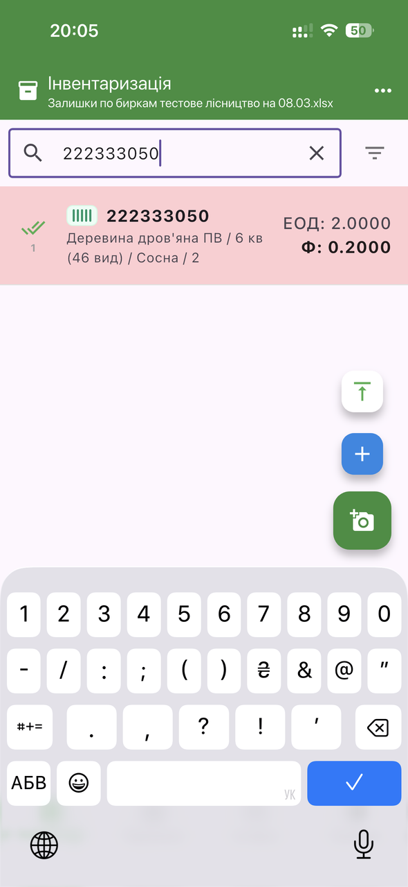
Зручний фільтр за параметрами: нестачі по об'єму
Миттєво отримуйте детальну "Довідку до акту" з розбивкою по виду складу, продукції, та іншим параметрам лісопродукції. Роздрукуйте її прямо на ділянці через мобільний термопринтер, Експортуйте в Ексель для подальшого аналізу або поділіться з колегами через месенджери: WhatsApp, Telegram, Viber, Signal або інші.
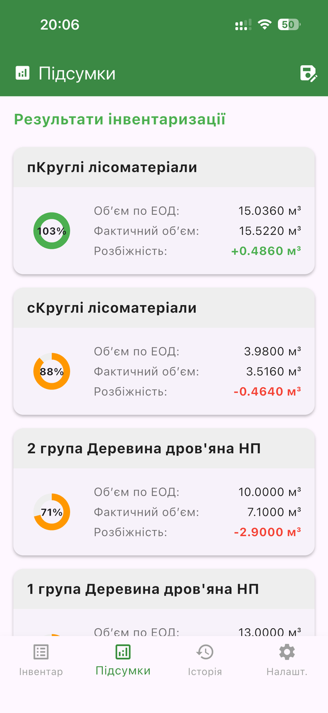
Зведені результати перевірки
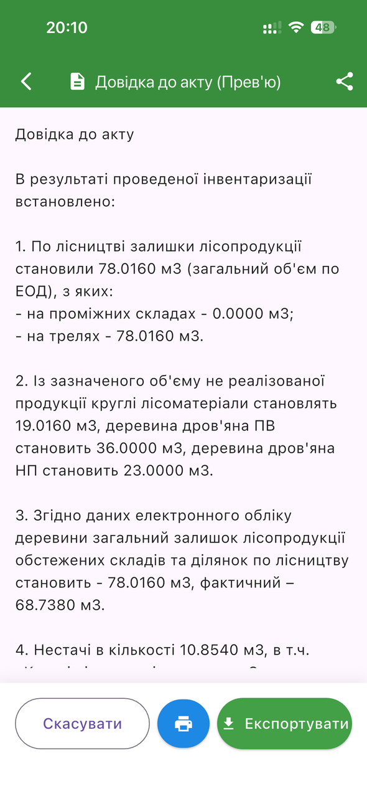
Генерація довідки до акту
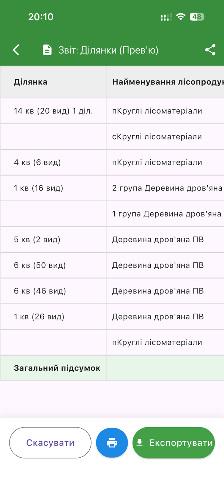
Звіт у розрізі ділянок
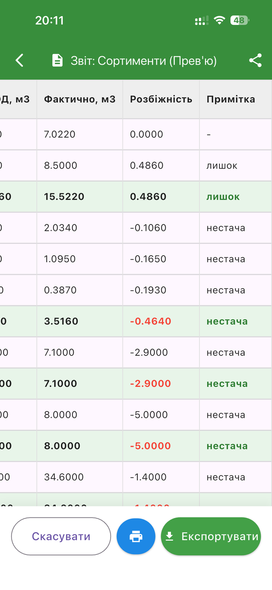
Звіт у розрізі сортиментів
Працюйте у команді! Делегуйте перевірку різних ділянок або проміжних складів колегам і в кінці дня злийте всі бази в один загальний звіт через локальну Wi-Fi мережу, без доступу до інтернету. Якщо виявиться, що колеги перевірили повторно продукцію, то програма запропонує вибрати вірний результат в розділі "Конфлікти".
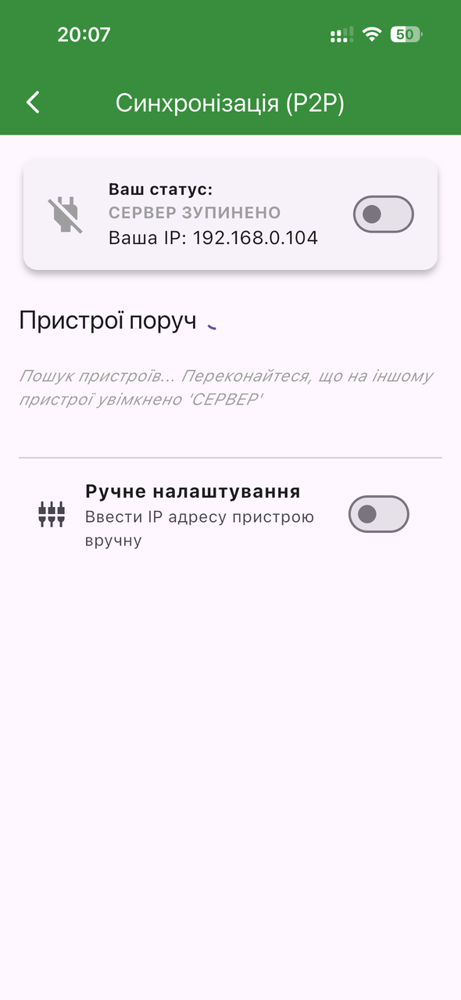
Меню локальної мережі
1) На одному пристрої запустіть Сервер
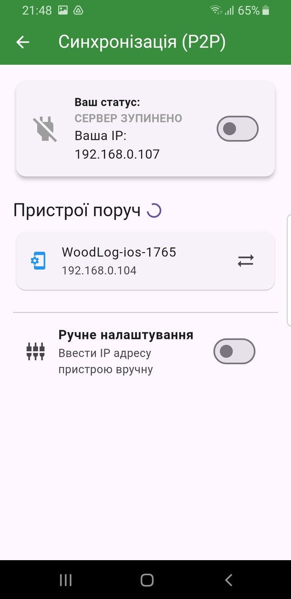
2) На іншому пристрої в Пошук сервера виберіть ваш перший пристрій
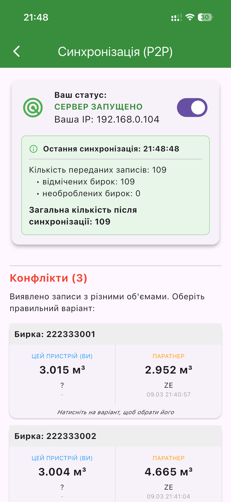
3) Підсумок після синхронізації
WoodLog розроблений для автоматизації рутинних процесів обліку ділянок та складів. Сформуйте в ЕОД звіт про залишки та за допомогою сканера швидко перевірте наявну інформацію про продукцію на ділянці чи складі.